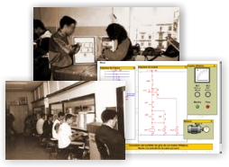

¿A quién está dirigido?
CACEL está dirigido especialmente a los alumnos que cursan el módulo "Automatismos y Cuadros Electricos" del Ciclo Formativo "Equipos e Instalaciones Electrotécnicas",pero puede servir de apoyo a cualquier alumno que en su plan de estudios se trate la automatización industrial (Ciclo formativo de grado superior "Sistemas de regulación y control", bachillerato Tecnológico, etc).
